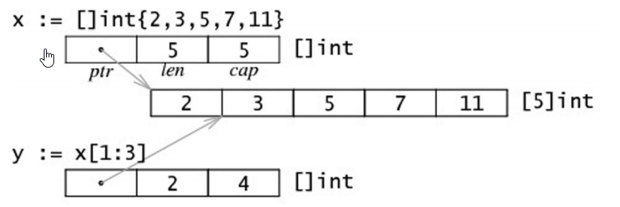
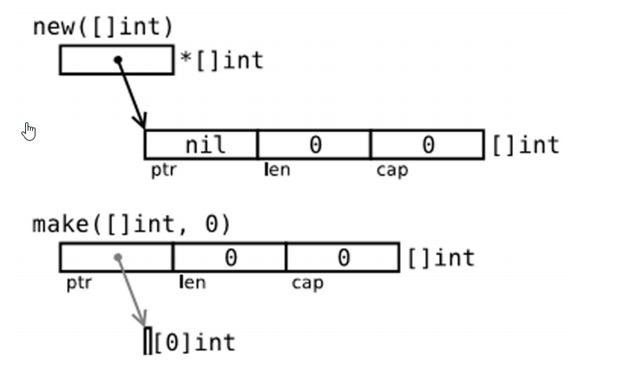

前
一些表格图片copy from 《the way to go》
正
控制结构
说点值得注意的,这种基础的东西各个语言都差不多
- 返回异常相关
value,err := pack.Function(param),然后对err进行判断处理 - for循环不需要()
- 没有while 和 do while
- 可以使用
for condition {}代替while - for range
一般的形式是for ix,val := range coll {}ix是索引,val是集合中对应索引的值拷贝,如果val是指针,也是拷贝.coll是一个可迭代的变量 - 标签和goto
标签就是在某一行,以一个单词和:结尾,标识一个运行位置,可以使用contine和goto跳转到该位置,同时可以配合break跳出多重循环.这东西不建议使用
函数
- 函数声明,java中没有的,就是在一个函数中,只给出函数名和函数签名,而不需要函数体,然后在外部定义
- Go不允许函数重载
- 函数参数可以没有名字
- 允许多值返回
- 值传递和引用传递就是c和java那一套
- 命名返回值 : 如果返回值被命名,就不用在返回处再写了,直接return
- 空白符/占位符: 用来抛弃一些不需要的值,
- 变长参数 :
func myFunc(a,b,arg ... int){} - defer : 类似finally,允许我们推迟到函数返回之前才执行词句语句,功能也就是finally的,释放资源什么的,值得一提的是,一个函数中可以有多个,执行顺序是栈,先进后出
内置函数
| 名称 | 说明 |
|---|---|
| close | 用于管道通信 |
| len、cap | len 用于返回某个类型的长度或数量（字符串、数组、切片、map 和管道）；cap 是容量的意思，用于返回某个类型的最大容量（只能用于切片和 map） |
| new、make | new 和 make 均是用于分配内存：new 用于值类型和用户定义的类型，如自定义结构，make 用于内置引用类型（切片、map 和管道）。它们的用法就像是函数，但是将类型作为参数：new(type)、make(type)。new(T) 分配类型 T 的零值并返回其地址，也就是指向类型 T 的指针。它也可以被用于基本类型：v := new(int)。make(T) 返回类型 T 的初始化之后的值，因此它比 new 进行更多的工作 new() 是一个函数，不要忘记它的括号 |
| copy、append | 用于复制和连接切片 |
| panic、recover | 两者均用于错误处理机制 |
| print、println | 底层打印函数，在部署环境中建议使用 fmt 包 |
| complex、real imag | 用于创建和操作复数 |
函数做参数
func callback(f func(int , int )){}
闭包
这鬼东西我真的是一直记不住,因为一直能看到,但是从来没用过
匿名函数, func(x,y int) int {return x + y} 不能单独存在,可以被赋予某个变量,或者直接调用func(x,y int) int {return x + y}(3,4)
匿名函数被称为闭包,定义没意义
闭包应用,将函数作为返回值
func Add() (func(b int) int)该函数不接受任何参数,但是返回一个函数func(b int)int的函数
此时,如果我们在Add中定义一个变量,同时在返回的函数中使用,该变量的值就可以被保存下来,例子
package main
import "fmt"
func main() {
var f = Adder()
fmt.Print(f(1), " - ")
fmt.Print(f(20), " - ")
fmt.Print(f(300))
}
func Adder() func(int) int {
var x int
return func(delta int) int {
x += delta
return x
}
}返回值1 - 21 - 321
数组和切片
数组
声明 : var identifier [len]type
创建var a2 = new (5[]int) a2的类型是*[5]int,a := [...]string{"a","b","c","d"} 类似java的string[] a = {...},当然…可以替换为固定的长度
还可以通过var arrkeyvalue = [5]string{3:"chris",4:"ron"}来给特定索引的位置赋值,其他都是默认值
切片
切片是对数组一个连续片段的引用,其实就是python中的list的[]语法
切片是一个长度可变的数组,提供了计算容量的函数cap()可以测量出切片最长可以达到多少: 如果s是一个切片,cap(s)就是从s[0]到数组末尾的数组长度.
切片声明 :
var identifier []type = arr[start:end],从arr的start开始,到end为止,不包括end.如果start和end为空([:]),代表整个数组,
例子: (copy的)
使用make创建一个切片:
slice := make(type[],len),此时cap(slice) == len(slice) == 10 ;
还可以使用slice := make(type[] ,len,cap)这里有一个make和new的差别:
切片重组
扩容一位:s = s[0:len(s)+1]切片复制和追加
copy(s_to,s_from), 将s_from的数据复制到s_to
append(s,x…T) , 将数据添加到切片s中字节切片
参照python,实际是字节数组